Settings
In the setting, you can set the threshold and the form of the output.
If you don't set anything up, the default value below will go in.
QUERY_CAPTURE = {
"PRINT_THRESHOLDS": { # If you exceed the values below, it will be output to the console.
"SLOW_MIN_SECOND": 1, # time thresholds
"DUPLICATE_MIN_COUNT": 10, # duplicate query thresholds
"SIMILAR_MIN_COUNT": 10, # similar query thresholds
"COLOR": "yellow", # The color you want to show when you go over the thresholds.
},
"PRESENTER": "django_query_capture.presenter.PrettyPresenter", # Output class, if you change this class, you can freely customize it.
"IGNORE_SQL_PATTERNS": [], # SQL Regex pattern list not to capture
"PRETTY": {"TABLE_FORMAT": "pretty", "SQL_COLOR_FORMAT": "friendly"}, # Setting values that can be customized when using PrettyPresenter.
}
QUERY_CAPTURE¤
| name | description | available value |
|---|---|---|
PRINT_THRESHOLDS |
If you exceed the values below, it will be output to the console. The table below contains additional explanations. |
dict |
PRESENTER |
Output class, if you change this class, you can freely customize it. | Class that inherited BasePresenter. Please refer to How to Customize Presenter |
IGNORE_SQL_PATTERNS |
SQL Regex pattern list not to capture | list[str] |
PRETTY |
Setting values that can be customized when using PrettyPresenter. The table below contains additional explanations. |
dict |
PRINT_THRESHOLDS¤
| name | description | available value |
|---|---|---|
SLOW_MIN_SECOND |
time thresholds ( unit: second ) | int |
DUPLICATE_MIN_COUNT |
duplicate query thresholds | int |
SIMILAR_MIN_COUNT |
similar query thresholds | int |
COLOR |
The color you want to show when you go over the thresholds. | Please refer to here for a list of available colors. |
Similar vs Duplicate
First, let's define it simply and understand it with one example.
"Similar" has almost the same sql but only different parameters.
"Duplicate" has exactly the same sql.
This example is a "Similar" example.
The preceding SQL is the same, but only the parameters are different.
'INSERT INTO "news_reporter" ("full_name") VALUES (%s)' % ('gil')
'INSERT INTO "news_reporter" ("full_name") VALUES (%s)' % ('young')
'INSERT INTO "news_reporter" ("full_name") VALUES (%s)' % ('ashe')
This example is a "Duplicate" example.
It's exactly the same.
Custom color example
It applies only to table colors.
red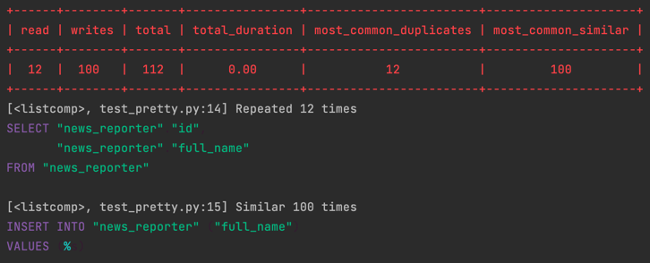green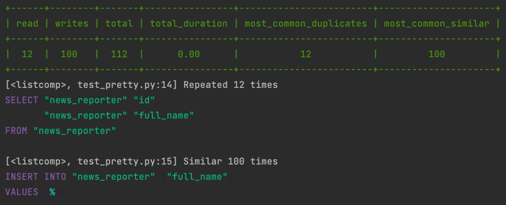yellow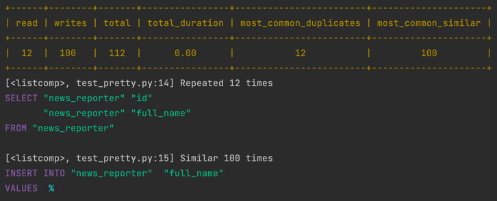blue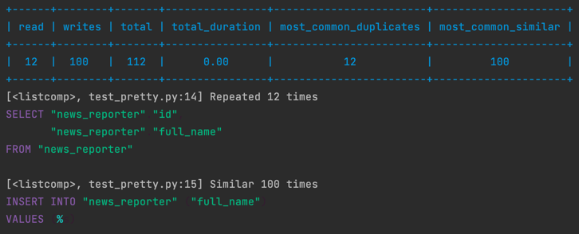magenta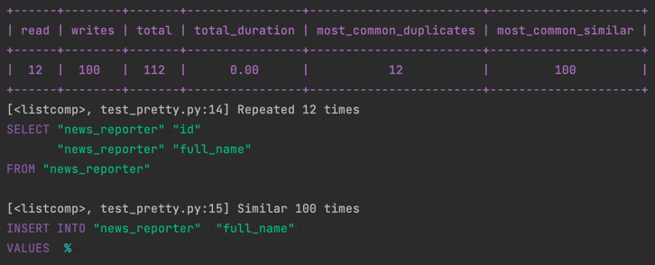cyan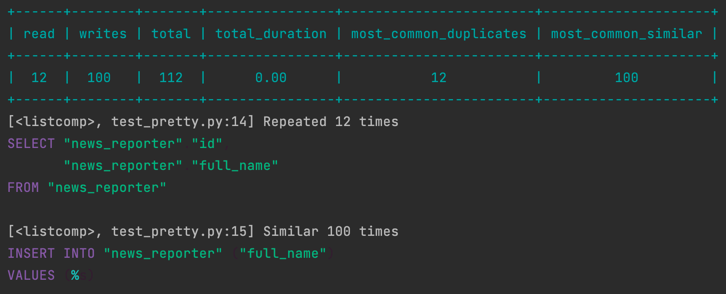white
PRETTY¤
| name | description | available value |
|---|---|---|
TABLE_FORMAT |
You can specify the form of the table. | Please refer to this place for the form that can be designated. |
SQL_COLOR_FORMAT |
You can adjust the color format when outputting SQL. | Please refer to this place for the form that can be designated. |
Custom table format example
All settings can be found here.
plain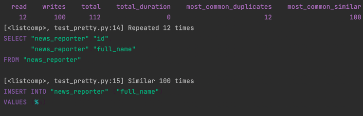simple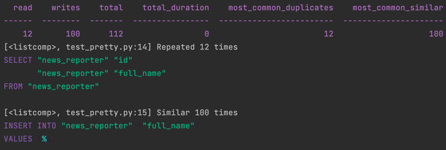githubgrid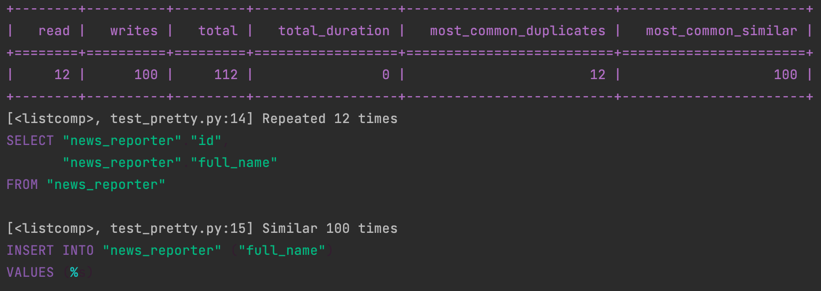fancy_grid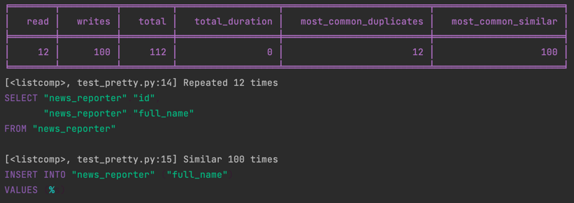presto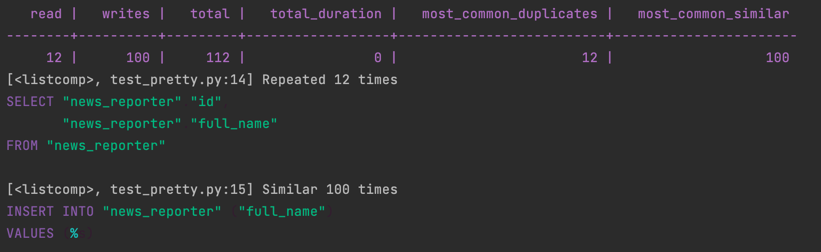pretty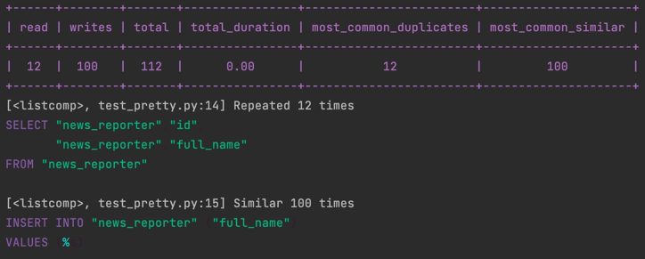psql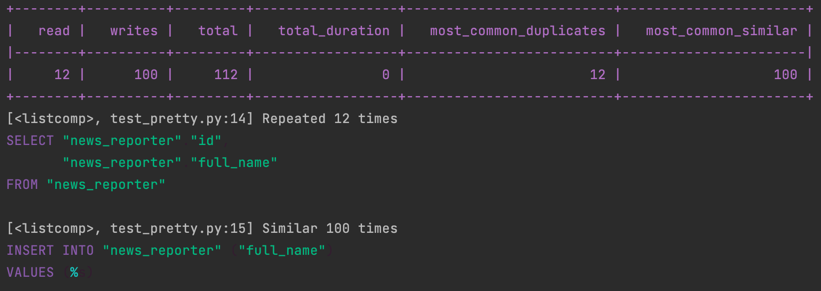pipe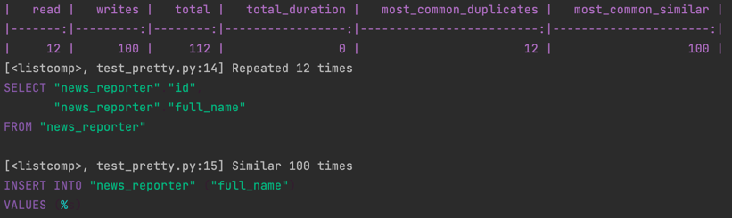orgtbl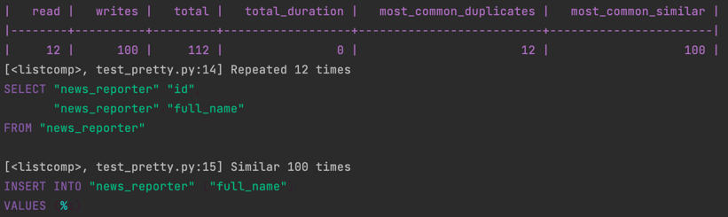

Custom sql color format example
All settings can be found here.
zenburn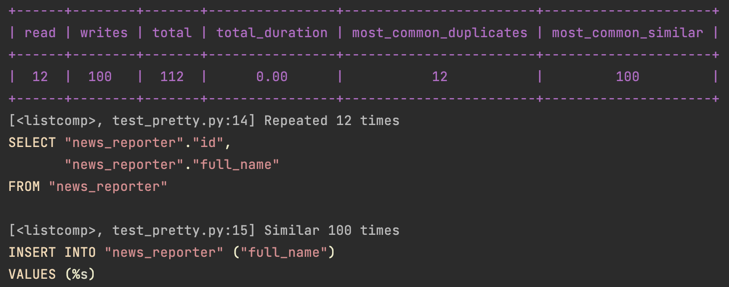material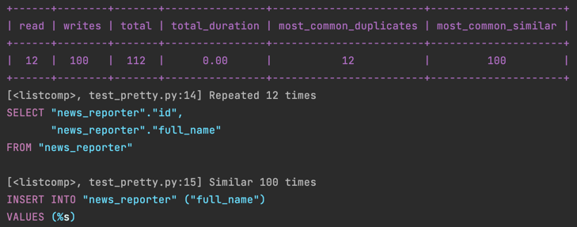one-dark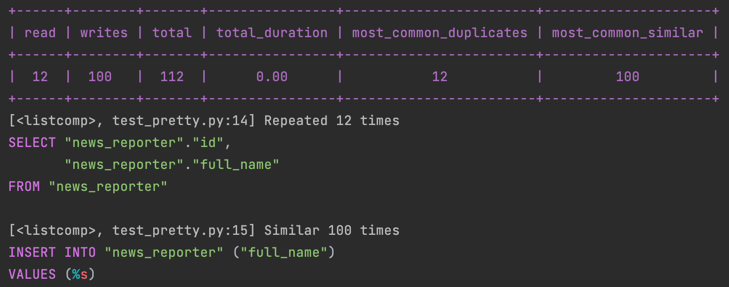dracula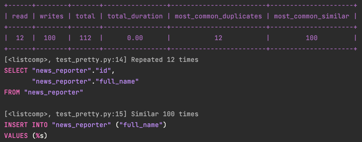
Last update:
January 18, 2022